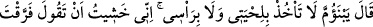
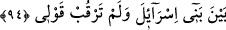

Onun için cevabında şöyle dedi: “(Rabb’im), bu senin imtihanından başka bir şey
değildir.” (el-A‘râf, 6/155) Böylece hakikatın hakkını gözeterek imtihanı da saptırmayı
da Allâh’a izâfe etti.
Hz. Mûsâ: Ey Hârun, “Emrime âsî mi oldun?” dedi.” Yani dinde sebat göstermen ve
onu koruman hususundaki emrime, şu insanların benim ve Allâh’ın emrine âsî oldukları
gibi sen de âsî mi oldun? Çünkü Hz. Mûsâ’nın kardeşi Hârun’a hitaben “benim yerime
geç” (el-A‘râf 7/142) demesi dinde salâbet ve onu korumayı emir idi. Çünkü hilâfet
ancak, yerine geçilen selefin yaptıklarını sürdürmekle olur.
94. (Hârun:) “Ey annemin oğlu, saçımı sakalımı yolma! Ben, senin:
‘İsrailoğulları’nın arasına ayrılık düşürdün; sözümü tutmadın!’ demenden
korktum.” dedi.
“(Hârun:) Ey annemin oğlu,” Kişiye doğuran kadına da, o kadını doğurana da daha
öncekilere de “anne” denilir. Ayrıca bir şeyin varlığı, terbiyesi, ıslahı ve başlangıcı için
asıl olan şeye de “ana” denir.
Hârun (a.s.)’ın Mûsâ (a.s.)’ı anasına izâfeten anması, anne hakkına olan saygıyı
belirtmek ve onun kalbini yumuşatmak, aynı nesebden olduklarına işaret etmek içindir.
Cumhur, onların ana-baba bir kardeş oldukları kanâatindedir.
Büyüklerden
biri
şöyle
demiştir:
“Hz.
Hârun’un
peygamberliği
rahmet
makamındandır. Nitekim âyette: “Ona, rahmetimizden dolayı kardeşi Hârun’u da
Peygamber olarak armağan ettik.” (Meryem, 19/53) buyrulmuştur. Bu sebeple o, Hz.
Mûsâ’ya annesinin adını anarak hitap etmiştir. Çünkü annenin rahmeti daha fazladır.
Onun için ilk terbiye onların şefkatli eliyle başlar.
et-Te’vîlâtü’n-Necmiyye’de şöyle der: “Hz. Hârun, Mûsâ (a.s.)’ın o hazretten, şevkten
sarhoş (sekrân), zevk ile dopdolu; onda Hakk’a yakınlığın, seçilmenin ve Hak ile
konuşmanın coşkusu olduğunu görünce onu ancak derin bir tevazu ve engin bir huşû
kapladı. Bu duygular içinde Hz. Mûsâ’ya şöyle seslendi: “Ey anamın oğlu, “saçımı
sakalımı yolma!”
Ona annesinin adını anarak hitap etmesinde iki amacı vardır: Birincisi, Hz. Mûsâ’ya
sıla-i rahmi hatırlatarak öfkesini yatıştırmaktır. İkincisi, annesini zikrederek ona mîkatta
Cenâb-ı Hakk’a kendisini görmeyi dilediğini arz ettiği vakitte meydana gelen hâlini
hatırlatmaktır. “Rabb’i dağa tecellî edince onu darmadağın etti ve Mûsâ da baygın
düştü.” (el-A’râf 7/143) İşte bu baygınlık hâlinde iken melekler Hz. Mûsâ’nın yanına
geldiler ve saçını çekerek şöyle dediler: “Ey hayızlı kadının oğlu, toprakla Rabbü’l-
erbâb’ın Rablerin Rabbi’nin ne münâsebeti vardır?”